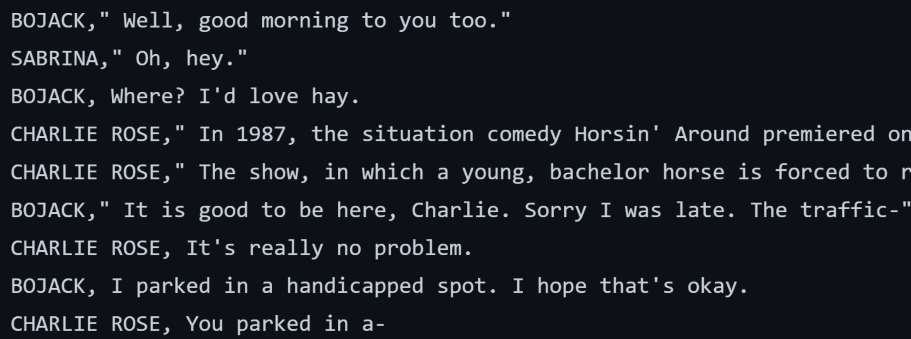

1. What is your project about? (A 1-2 word answer that describes your main focus, e.g., climate change)
TV series analysis.
2. What is the data you plan to use? (A link to the dataset with one sentence describing it)
BoJack Horseman subtitles
Fig. 1
As seen in Fig. 1, this dataset consists of the BoJack Horseman transcript, with each row consisting of the character’s name and the related line of dialogue spoken by the character. I might also use data from sites such as Metacritic with regards to the reception of the show, in terms of audience ratings.
3. What is the question you plan to answer? (One sentence that ends with a question mark that could act like the title of your data story)
Are audiences of the BoJack Horseman TV series drawn in by negative sentiments portrayed by dialogue in the show?
4. Why is this an important question?
BoJack Horseman was ranked first in IndieWire’s list of ‘Best Animated Series of All Time’ , lauded for its ‘spans of dialogue that bridge heartbreak and hilarity’ and how it makes its audiences ‘laugh and cry in unprecedented amounts’ (Travers & Nguyen, 2023).
An investigation of the sentiments portrayed by BoJack Horseman’s ostensibly well-written dialogue is imperative when considering the popularity of the TV series, which has especially infected the younger generations—millennials and Gen-Z. A study by YouGov America found that 77% of Millennial participants have heard of the show, and 40% of them liked it (2022). According to Tylt, Gen-Z and Millennials relate to the situations tackled by BoJack Horseman, which ‘blends existential crises and extremely poor adult decision-making with the childishness of a typical cartoon’.
Fans of the show have also been found relating to the main character, BoJack Horseman, although he was ‘never meant to be a role model’ — the character inconveniences people around him through his actions, falls back on self-destructive habits, and is highly nihilistic—The Daily Star hence reminds viewers, “BoJack isn’t perfect, and if he can go to therapy, the least you can do is make sure you’re choosing better reasons to love the show” (Hasan, 2019). As such, audience’s preferences for negative sentiments portrayed by dialogue and main characters in the show could be indicative of their viewing habits. This would open up discussions about how such adult shows impact the emotions and even mental health of its audiences.
5. Which rows and columns of the dataset do you plan to use, to answer this question? (Actual names of the values you plan to filter (rows) or subset (columns) the data on)
I plan to use both columns of the dataset: 1) name of character and 2) line of dialogue. I will create these columns by splitting the data using a delimiter. I plan to then separate the rows of data based on episode, so as to conduct sentiment analysis on the episodes separately. Rows with missing character names will be filtered out. In some extreme cases (e.g. Season 4 Episodes 5 to 10), data from entire seasons will be removed if there is missing or broken data, to ensure that sentiment analysis can be conducted according to character for each episode.
References
Travers, B. & Nguyen, H. (2023). The best animated series of all time. https://www.indiewire.com/feature/best-animated-series-all-time-cartoons-anime-tv-1202021835/6/
YouGov America. (2022). Bojack Horseman. Retrieved March 24, 2023, from https://today.yougov.com/topics/entertainment/explore/tv_show/BoJack_Horseman
Hasan, W. (2019, May 30). Why relating to Bojack doesn’t make you special. Retrieved March 24, 2023, from https://www.thedailystar.net/shout/news/why-relating-bojack-doesnt-make-you-special-1750717